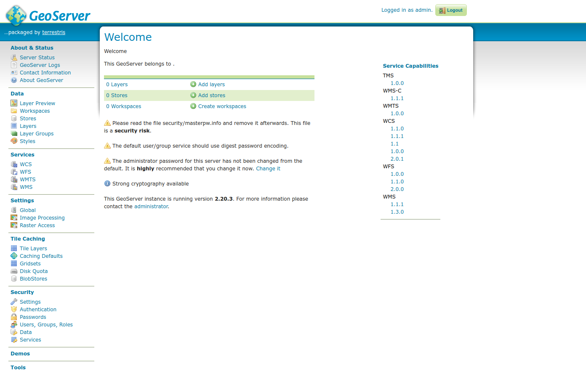

Einrichten des GeoServer-Services
Nachdem wir die PostGIS-Datenbank erfolgreich eingerichtet haben, erweitern wir unsere docker-compose.yml nun um den GeoServer, um Geodaten als OGC-Dienste bereitzustellen.
GeoServer-Service hinzufügen
Erweitern Sie die bestehende docker-compose.yml um einen weiteren Service.
- Name:
fossgis-geoserver - Image:
docker.osgeo.org/geoserver:2.26.2
Folgende Punkte sollten berücksichtigt werden:
- Port-Mapping: Der interne (HTTP-) Port 8080 auf sollte auf den Host-Port 8080 weitergeleitet werden.
- Datenverzeichnis mounten:
- Host: Eigener Pfad für persistente Speicherung, z.B.
./geoserver_data - Container:
/opt/geoserver_data
- Host: Eigener Pfad für persistente Speicherung, z.B.
- Startreihenfolge festlegen:
depends_on:fossgis-postgis
✏️ Hinweis: Die depends_on-Option stellt sicher, dass der GeoServer erst gestartet wird, wenn die PostGIS-Datenbank bereit ist.
GeoServer starten
Falls nötig, beenden Sie den laufenden Docker-Compose-Dienst:
docker compose down
Starten Sie das Compose-Netzwerk neu:
docker compose up
Zugriff auf GeoServer
Nach dem erfolgreichen Start können Sie den GeoServer im Browser unter folgender Adresse aufrufen:
🔗 http://localhost:8080/geoserver
📌 Login-Daten:
- Benutzer:
admin - Passwort:
geoserver

Arbeitsbereich anlegen
- Melden Sie sich im GeoServer an.
- Navigieren Sie zu Arbeitsbereiche (bzw. Workspaces).
- Erstellen Sie einen neuen Arbeitsbereich mit dem Namen
FOSSGIS.
PostGIS-Datenquelle einbinden
- Navigieren Sie zu Datenspeichern (bzw. Stores) und erstellen Sie einen neuen Datenspeicher
POSTGIS. - Verwenden Sie folgende Verbindungsparameter:
| Parameter | Wert |
|---|---|
| Host | fossgis-postgis |
| Port | 5432 |
| Database | fossgis |
| Schema | public |
| User | fossgis |
| Password | fossgis |
Neuen Layer hinzufügen
1️. Neuen Layer COUNTRIES anlegen
- Quelle: Datenspeicher
POSTGIS - Tabelle:
countries
2️. Optional: Stil für den Layer festlegen
- Verwenden Sie den Stil
countries.sldaus dermaterials.zip.
📟 Empfehlung
Alternativ können Sie die obigen Schritte auch automatisiert über die REST-Schnittstelle des GeoServers ausführen lassen. Hierzu können Sie den folgenden Befehl auf dem Terminal ausführen:
curl -o- https://raw.githubusercontent.com/terrestris/docker-ws/refs/heads/main/resources/setup/init-geoserver.sh | bash
🎯 Geschafft!
Ihr GeoServer ist nun eingerichtet und veröffentlicht Geodaten als Web Map Services (WMS). 🎉 Im nächsten Schritt werden wir OpenLayers über nginx einbinden.
➡️ Weiter zu OpenLayers über nginx 🚀